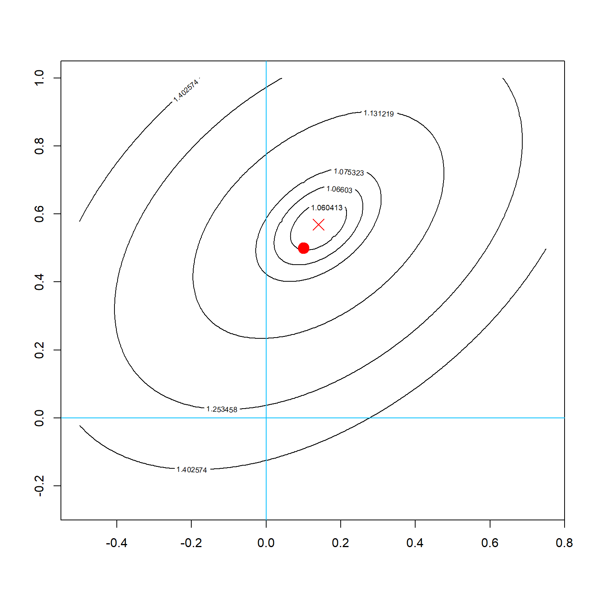
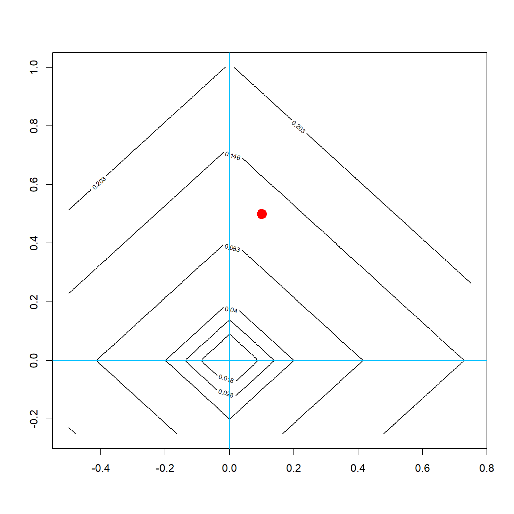
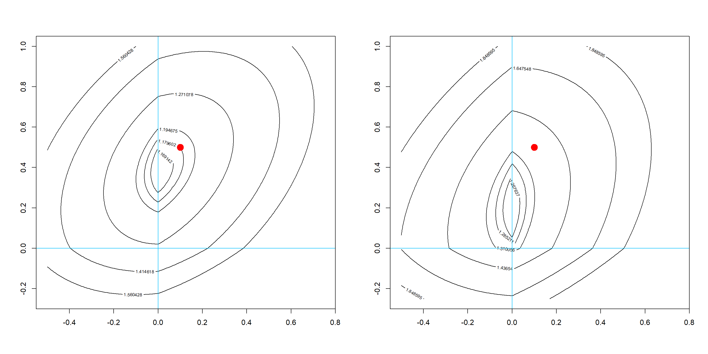
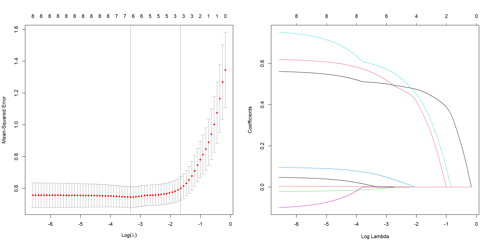

Chapter 12 Lasso Regression
12.1 Basic Concepts
Lasso regression solves the following \(\ell_1\) penalized linear model
\[\widehat {\boldsymbol\beta}^{\,\text{lasso}} = \underset{{\boldsymbol\beta}}{\arg\min} \,\, \lVert \mathbf y- \mathbf X{\boldsymbol\beta}\rVert^2 + \lambda \lVert {\boldsymbol\beta}\rVert_1\]
We cannot obtain an analytical solution in a general case. However, for a special case with orthogonal design, i.e., \(\mathbf X^\text{T}\mathbf X= bI\), we can see that the Lasso solution is essentially applying a soft-thresholding function to each parameter in the OLS solution.
12.1.1 Variable Selection Property
Lasso regression has a variable selection property, which may shrink some coefficients to exactly 0 if the effect of that variable is small.
library(MASS)
set.seed(1)
n = 100
# create highly correlated variables and a linear model
X = mvrnorm(n, c(0, 0), matrix(c(1, -0.5, -0.5, 1), 2,2))
y = rnorm(n, mean = 0.1*X[,1] + 0.5*X[,2])
# compare parameter estimates
summary(lm(y~X-1))$coef## Estimate Std. Error t value Pr(>|t|)
## X1 0.1403512 0.1279464 1.096953 2.753501e-01
## X2 0.5686526 0.1272897 4.467390 2.124799e-05We can see that the optimal solution is at around (0.140, 0.569), which are both nonzero.
beta1 <- seq(-0.5, 0.75, 0.005)
beta2 <- seq(-0.25, 1, 0.005)
allbeta <- data.matrix(expand.grid(beta1, beta2))
# the OLS objective function contour
rss <- matrix(apply(allbeta, 1, function(b, X, y) sum((y - X %*% b)^2)/n, X, y),
length(beta1), length(beta2))
# quantile levels for drawing contour
quanlvl = c(0.01, 0.025, 0.05, 0.2, 0.5, 0.75)
contour(beta1, beta2, rss, levels = quantile(rss, quanlvl))
box()
# the truth
points(0.1, 0.5, pch = 19, col = "red", cex = 2)
points(0.1403512, 0.5686526, pch = 4, col = "red", cex = 2)
abline(h = 0, col = "deepskyblue")
abline(v = 0, col = "deepskyblue")
As an alternative, if we add a Lasso \(\ell_1\) penalty, the contour will be changed. The following plot is the contour of the penalty.
pen <- matrix(apply(allbeta, 1, function(b) 0.2*sum(abs(b))),
length(beta1), length(beta2))
contour(beta1, beta2, pen, levels = quantile(pen, quanlvl))
points(0.1, 0.5, pch = 19, col = "red", cex = 2)
box()
abline(h = 0, col = "deepskyblue")
abline(v = 0, col = "deepskyblue")
In addition, since the Lasso penalty is not smooth, the overall objective function will have nondifferenciable points along the axies. We can see that if a sufficiently large penalty is applied, the solution is forced to shrink some parameters to 0. This is again a bias-variance trade-off.
par(mfrow=c(1, 2))
# adding a L2 penalty to the objective function
rss <- matrix(apply(allbeta, 1, function(b, X, y) sum((y - X %*% b)^2)/n + 0.2*sum(abs(b)), X, y),
length(beta1), length(beta2))
contour(beta1, beta2, rss, levels = quantile(rss, quanlvl))
points(0.1, 0.5, pch = 19, col = "red", cex = 2)
abline(h = 0, col = "deepskyblue")
abline(v = 0, col = "deepskyblue")
box()
# adding a larger penalty
rss <- matrix(apply(allbeta, 1, function(b, X, y) sum((y - X %*% b)^2)/n + 0.5*sum(abs(b)), X, y),
length(beta1), length(beta2))
contour(beta1, beta2, rss, levels = quantile(rss, quanlvl))
points(0.1, 0.5, pch = 19, col = "red", cex = 2)
abline(h = 0, col = "deepskyblue")
abline(v = 0, col = "deepskyblue")
box()
12.1.2 Example 1: The Prostate Cancer Data
We use the prostate cancer data prostate from the ElemStatLearn package. The dataset contains 8 explainatory variables and one outcome lpsa, the log prostate-specific antigen value.
## lcavol lweight age lbph svi lcp gleason pgg45 lpsa train
## 1 -0.5798185 2.769459 50 -1.386294 0 -1.386294 6 0 -0.4307829 TRUE
## 2 -0.9942523 3.319626 58 -1.386294 0 -1.386294 6 0 -0.1625189 TRUE
## 3 -0.5108256 2.691243 74 -1.386294 0 -1.386294 7 20 -0.1625189 TRUE
## 4 -1.2039728 3.282789 58 -1.386294 0 -1.386294 6 0 -0.1625189 TRUE
## 5 0.7514161 3.432373 62 -1.386294 0 -1.386294 6 0 0.3715636 TRUE
## 6 -1.0498221 3.228826 50 -1.386294 0 -1.386294 6 0 0.7654678 TRUEWe fit the model using the glmnet package. The tuning parameter need to be selected using cross-validation with the cv.glmnet function.
library(glmnet)
set.seed(3)
fit2 = cv.glmnet(data.matrix(prostate[, 1:8]), prostate$lpsa, nfolds = 10)We can obtain the estimated coefficients from the best \(\lambda\) value. There are usually two options, lambda.min and lambda.1se. The first one is the value that minimizes the cross-validataion error, the second one is slightly more conservative, which gives larger penalty value with more shrinkage.
## 9 x 1 sparse Matrix of class "dgCMatrix"
## 1
## (Intercept) 0.1537694862
## lcavol 0.5071477800
## lweight 0.5455934489
## age -0.0084065349
## lbph 0.0618168145
## svi 0.5899942922
## lcp .
## gleason 0.0009732886
## pgg45 0.0023140828## 9 x 1 sparse Matrix of class "dgCMatrix"
## 1
## (Intercept) 0.6435469
## lcavol 0.4553889
## lweight 0.3142829
## age .
## lbph .
## svi 0.3674270
## lcp .
## gleason .
## pgg45 .The left plots demonstrates how \(\lambda\) changes the cross-validation error. There are two vertical lines, which represents lambda.min and lambda.1se respectively. The right plot shows how \(\lambda\) changes the parameter values.

Some other packages can perform the same analysis, for example, the lars package.